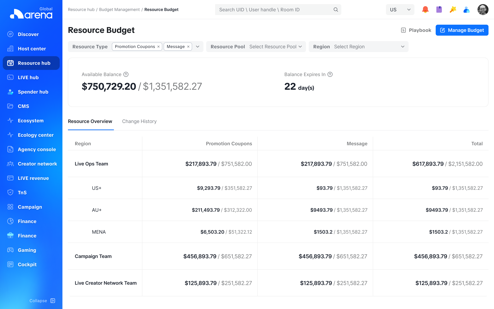

项目简介
以季度数据查看能力升级为契机，围绕数据呈现、预算调整与角色视角，优化 Arena 资源面板的整体使用体验

🤔 Arena 资源面板是什么？
Arena 资源面板是面向TikTok内部财务同学的资源数据查看工具，主要服务于平台财务与 TikTok 区域财务，帮助不同角色查看各自关注的资源与预算数据
🧐 为什么优化升级？
Arena 资源面板是面向TikTok内部财务同学的资源数据查看工具，主要服务于平台财务与 TikTok 区域财务，帮助不同角色查看各自关注的资源与预算数据